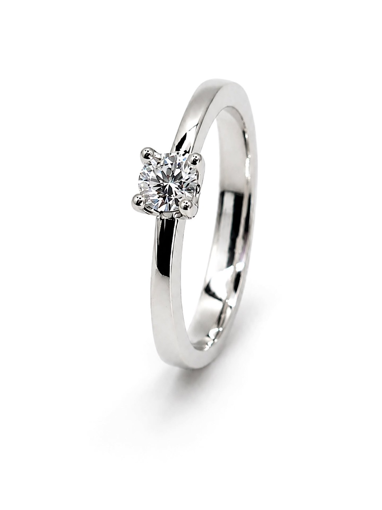
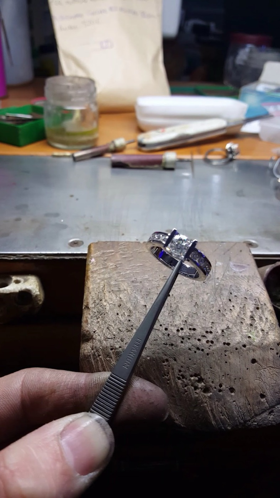
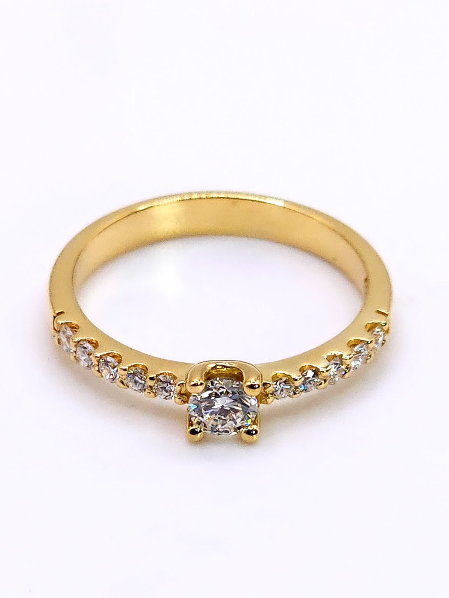
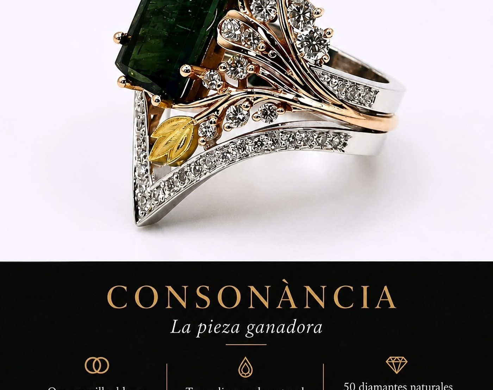
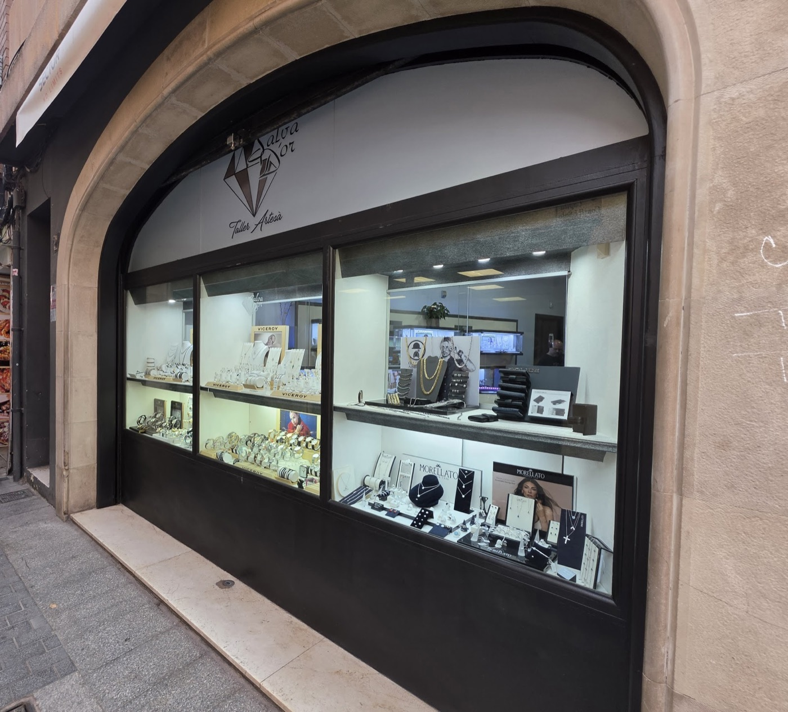

Alta joyería artesana · Lloret de Mar · desde 1965
Joyas quenacen enel taller
Oro de 18 quilates, diamantes naturales y muchas horas de banco. Joan Salvador diseña y hace a mano piezas únicas, como la que gira aquí al lado: arrástrala, o diséñala tú más abajo.

Arrastra para girar
- 18 kOro amarillo, blanco y rosa
- G · VS1Diamantes naturales
- 1965Joyeros en Lloret
- 4,9 ★70 reseñas en Google

El taller
Entras con una idea,
sales con una joya
Así lo cuentan nuestros clientes: traen una foto, un anillo que ya no usan o solo una sensación, y Joan la convierte en una pieza que no existe en ningún otro sitio. También restauramos, reparamos y damos nueva vida al oro que guardas en un cajón.
- 1965Abre la joyería en el Carrer de la Vila de Lloret.
- De padre a hijoJoan Salvador Ortiz enseña el oficio a su hijo en el mismo banco.
- HoyDiseño, engaste y acabado, todo en el taller de casa.
- 2026Primer Premio de Diseño de Alta Joyería con Consonància.
I · Interactivo
Diseña tu anillo
Elige modelo, oro, piedra y quilates; gíralo con el dedo y, cuando te guste, mándanoslo. Lo hacemos a mano en el taller.

0,50 ct
II · Medidor en pantalla
¿Qué talla usas?
- 1Pon una tarjeta bancaria sobre la pantalla y mueve el control hasta que el rectángulo mida lo mismo.
- 2Coloca encima un anillo que te quede bien y ajusta el círculo al borde interior.
- 3Ya está: esa es tu talla española. Si dudas, ven y te la medimos en tienda.
Talla española
13perímetro 53,4 mmIII · La vitrina
Recién salidas del banco
01 / 08
—
—
IV · Primer Premio de Diseño de Alta Joyería
Consonància
«Una composición donde cada elemento encuentra su lugar y nada sobra ni falta.»

- Oro
- Amarillo, blanco y rosa de 18 kt
- Piedra central
- Turmalina verde natural · 4,39 ct
- Diamantes
- 50 naturales talla brillante · 0,609 ct · G/VS1
- Premio
- 1.º de Diseño de Alta Joyería · V Concurso Internacional SINTEMÁTICA 2026 · Asociación Joyas de Autor
- Expuesta
- MadridJoya · IFEMA Madrid · 24–27 de septiembre
La pieza premiada guarda una historia de familia: se creó para una de las clientas más antiguas de la casa, a la que el padre de Joan había conocido años atrás.
V · Relojería y taller
También el tiempo
Distribuidores oficiales de relojería y servicio de taller: pilas, correas, ajustes, restauración y reparación de joyas.
4,9★★★★★ · 70 reseñas en Google
«Joan es un artesano de altísima calidad. Le encargué un anillo en oro amarillo y no pudo haber quedado mejor.»
«Me han hecho una pieza completamente personalizada. El trabajo es de una finura y elegancia admirables.»
«Buscaba un anillo de compromiso. Nada encajaba con lo que tenía en mente, así que me propuso hacerlo a medida.»
«Teníamos anillos obsoletos y, con su oro y un ull de Santa Llúcia, Joan nos ha hecho un anillo nuevo. Muy bonito.»

VI · Visítanos
Carrer de la Vila, 63
- Lunes a sábado
- 10:00–13:30 · 16:30–20:00
- En verano
- hasta las 22:00
- Domingo
- Cerrado
- Teléfono
- 972 37 15 13
- Correo
- info@joieriasalvador.com
- @joieria_salva_dor
Horario